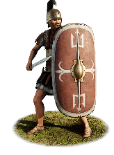
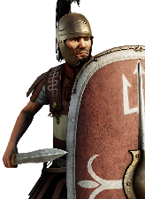
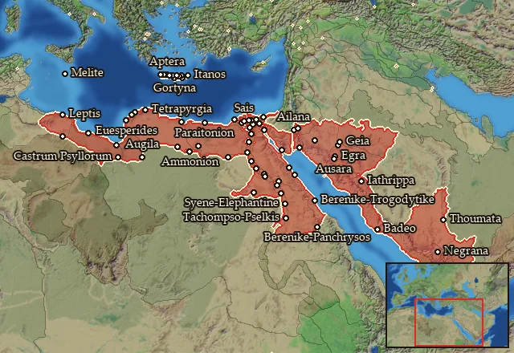

Legio III Cyrenaica


Class: heavy · Category: infantry · Men per unit: 40
Reforms: Unlocked by Named Legions are now available
Stats
| Rank in roster | ||
|---|---|---|
| Men per unit | 40 | ███······· 30% |
| Attack | 14 | ███████··· 67% |
| Charge bonus | 14 | █████····· 51% |
| Defence | 39 | ███████··· 70% |
| · armour | 12 | ███████··· 70% |
| · defence skill | 20 | █████····· 47% |
| · shield | 7 | █████████· 91% |
| Morale | 13 | ███████··· 70% |
| Discipline | Normal | |
| Training | Highly trained | |
| Recruitment cost | 1,660 dn | ███······· 28% |
| Upkeep per turn | 610 dn | ████······ 43% |
| Turns to recruit | 3 |
Weapons
| Primary | Secondary | Primary | Secondary | Primary | Secondary | Primary | Secondary | ||||
|---|---|---|---|---|---|---|---|---|---|---|---|
| Attack | 14 | 13 | Type | thrown · blade | melee · blade | Projectile | pilum_early | — | Ammunition | 2 | — |
| Charge bonus | 14 | 14 | Damage | piercing | piercing | Range | 40 | — | Properties | Armour-piercing (counts only half the target's armour) · used just before charging into combat | — |
Defence
| Primary | Secondary | Primary | Secondary | Primary | Secondary | Primary | Secondary | ||||
|---|---|---|---|---|---|---|---|---|---|---|---|
| Total | 39 | — | Armour | 12 | — | Defence skill | 20 | — | Shield | 7 | — |
Condition and terrain
| Hit points | 1 | Ground: scrub / sand / forest / snow | 0 / -1 / 0 / -1 | Charge distance | 30 | Formations | Square · Testudo |
Technical stats
| Time between blows (primary / secondary) | 2.5 s / 2.5 s | Collision mass per man (1.0 is normal) | 1.25 | Spacing between men: close / loose | 1 × 1.2 m / 2 × 2.4 m | Default ranks | 5 |
| Extra fatigue in hot climates | 2 |
In battle: Can sap · Very good stamina
Who can recruit it
No faction has this on its core roster: it can be raised only in the provinces below.
A further 4 factions can raise it in the provinces below.
Exactly what a settlement must have, route by route (2)
| Building | Also requires | Building | Also requires | ||||
|---|---|---|---|---|---|---|---|
| Direct Rule | Tier 3 Military Industrial Complex · Tier 2 Colony · Legio iii cyrenaica early · Named Legions are now available | Homeland | Tier 2 Military Industrial Complex · Legio iii cyrenaica early · Named Legions are now available |
Areas of recruitment

Legio iii cyrenaica early: 77 provinces
Aidaia · Ailanitos Kolpos · Ammonia · Apollonopolites-Latopolites Nomoi · Apteraia · Arabike Aigyptos · Arsinoites-Aphroditopolites Nomoi · Athribites-Leontopolites Nomoi · Banizomeneia · Barke · Boreia Libya · Boreia Minaia · Boreia Trogodytike · Boubastites-Arabia Nomoi · Deutera Oasis · Dodekaschoinos · Elisaria · Erythra Thalassa · Euesperidai · Gortynia · Gynaikopolites Nomos · Hermopolites-Kynopolites Nomoi · Heroon Kolpos · Heroopolites-Heliopolites Nomoi · Hesperos Aigyptos · Hesperos Kyrenaike · Hierapytnia · Ida · Itania · Kassanitis · Katabathmos · Koptites-Tentyrites Nomoi · Kydoniatis · Kyrenaike · Latia · Lechienia · Lepqi Adir · Lykopolites-Hypselites Nomoi · Lyttos · Macaea · Maleth · Manahiytim · Marmarike · Memphites-Letopolites Nomoi · Mendesios-Diospolites Kato Nomoi · Menelaites-Prosopites Nomoi · Minoa · Nagran · Nalhan · Nasamonia · Nashaq · Notia Lechienia · Notia Sarakenia · Ombites Nomos · Oxyrhynchites-Herakleopolites Nomoi · Panopolites-Antaiopolites Nomoi · Pelousiake · Peri Thebas-Pathyrites Nomos · Pharanitaia · Polyrhen · Prote Oasis · Psyllia · Qarnawu · Rithymna · Sabaia · Saites-Xoites Nomoi · Sarakenia · Sebennytes-Bousirites Nomoi · Skenitaia · Swirwakh · Syrtis · Tanites-Sethroites Nomoi · Taucheira · Thamoudaia · Thinites-Diospolites Mikros Nomoi · Yathil · Yathrib